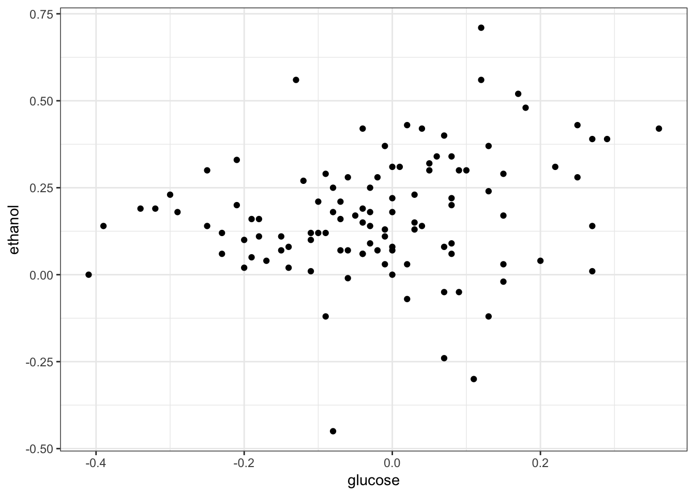

10 Case Study in Data Wrangling
10.1 Yeast Genomics
Smith and Kruglyak (2008) is a study that measured 2820 genotypes in 109 yeast F1 segregants from a cross between parental lines BY and RM.
They also measured gene expression on 4482 genes in each of these segregants when growing in two different Carbon sources, glucose and ethanol.
10.1.1 Load Data
The data was distributed as a collection of matrices in R.
> rm(list=ls())
> load("./data/smith_kruglyak.RData")
> ls()
[1] "exp.e" "exp.g" "exp.pos" "marker" "marker.pos"
> eapply(env=.GlobalEnv, dim)
$exp.e
[1] 4482 109
$exp.g
[1] 4482 109
$marker
[1] 2820 109
$exp.pos
[1] 4482 3
$marker.pos
[1] 2820 210.1.2 Gene Expression Matrices
> exp.g %>% cbind(rownames(exp.g), .) %>% as_tibble() %>%
+ print()
Warning: `as_tibble.matrix()` requires a matrix with column names or a `.name_repair` argument. Using compatibility `.name_repair`.
This warning is displayed once per session.
# A tibble: 4,482 x 110
V1 X100g.20_4_c.gl… X101g.21_1_d.gl… X102g.21_2_d.gl…
<chr> <chr> <chr> <chr>
1 YJR1… 0.22 0.18 0.05
2 YPL2… -0.29 -0.2 -0.19
3 YDR5… 0.72 0.04 0.26
4 YDR2… 0.23 0.31 0.12
5 YHR0… 0.4 -0.04 0.36
6 YFR0… -0.36 0.35 -0.26
7 YPL1… 0.23 -0.21 -0.25
8 YDR0… -0.09 0.57 0.24
9 YLR3… -0.23 0.13 -0.17
10 YCR0… -0.25 -0.98 -0.3
# … with 4,472 more rows, and 106 more variables:
# X103g.21_3_d.glucose <chr>, X104g.21_4_d.glucose <chr>,
# X105g.21_5_c.glucose <chr>, X106g.22_2_d.glucose <chr>,
# X107g.22_3_b.glucose <chr>, X109g.22_5_d.glucose <chr>,
# X10g.2_5_d.glucose <chr>, X110g.23_3_d.glucose <chr>,
# X111g.23_5_d.glucose <chr>, X112g.24_1_d.glucose <chr>,
# X113g.25_1_d.glucose <chr>, X114g.25_3_d.glucose <chr>,
# X115g.25_4_d.glucose <chr>, X116g.26_1_d.glucose <chr>,
# X117g.26_2_d.glucose <chr>, X11g.2_6_d.glucose <chr>,
# X12g.2_7_a.glucose <chr>, X13g.3_1_d.glucose <chr>,
# X15g.3_3_d.glucose <chr>, X16g.3_4_d.glucose <chr>,
# X17g.3_5_d.glucose <chr>, X18g.4_1_c.glucose <chr>,
# X1g.1_1_d.glucose <chr>, X20g.4_3_d.glucose <chr>,
# X21g.4_4_d.glucose <chr>, X22g.5_1_d.glucose <chr>,
# X23g.5_2_d.glucose <chr>, X24g.5_3_d.glucose <chr>,
# X25g.5_4_d.glucose <chr>, X26g.5_5_d.glucose <chr>,
# X27g.6_1_d.glucose <chr>, X28g.6_2_b.glucose <chr>,
# X29g.6_3_c.glucose <chr>, X30g.6_4_d.glucose <chr>,
# X31g.6_5_d.glucose <chr>, X32g.6_6_d.glucose <chr>,
# X33g.6_7_d.glucose <chr>, X34g.7_1_d.glucose <chr>,
# X35g.7_2_c.glucose <chr>, X36g.7_3_d.glucose <chr>,
# X37g.7_4_c.glucose <chr>, X38g.7_5_d.glucose <chr>,
# X39g.7_6_c.glucose <chr>, X3g.1_3_d.glucose <chr>,
# X40g.7_7_c.glucose <chr>, X41g.7_8_d.glucose <chr>,
# X42g.8_1_a.glucose <chr>, X43g.8_2_d.glucose <chr>,
# X44g.8_3_a.glucose <chr>, X45g.8_4_c.glucose <chr>,
# X46g.8_5_b.glucose <chr>, X47g.8_6_c.glucose <chr>,
# X48g.8_7_b.glucose <chr>, X49g.9_1_d.glucose <chr>,
# X4g.1_4_d.glucose <chr>, X50g.9_2_d.glucose <chr>,
# X51g.9_3_d.glucose <chr>, X52g.9_4_d.glucose <chr>,
# X53g.9_5_d.glucose <chr>, X54g.9_6_d.glucose <chr>,
# X55g.9_7_d.glucose <chr>, X56g.10_1_c.glucose <chr>,
# X57g.10_2_d.glucose <chr>, X58g.10_3_c.glucose <chr>,
# X59g.10_4_d.glucose <chr>, X5g.1_5_c.glucose <chr>,
# X60g.11_1_a.glucose <chr>, X61g.11_2_d.glucose <chr>,
# X62g.11_3_b.glucose <chr>, X63g.12_1_d.glucose <chr>,
# X64g.12_2_b.glucose <chr>, X65g.13_1_a.glucose <chr>,
# X66g.13_2_c.glucose <chr>, X67g.13_3_b.glucose <chr>,
# X68g.13_4_a.glucose <chr>, X69g.13_5_c.glucose <chr>,
# X70g.14_1_b.glucose <chr>, X71g.14_2_c.glucose <chr>,
# X73g.14_4_a.glucose <chr>, X74g.14_5_b.glucose <chr>,
# X75g.14_6_d.glucose <chr>, X76g.14_7_c.glucose <chr>,
# X77g.15_2_d.glucose <chr>, X78g.15_3_b.glucose <chr>,
# X79g.15_4_d.glucose <chr>, X7g.2_2_d.glucose <chr>,
# X80g.15_5_b.glucose <chr>, X82g.16_1_d.glucose <chr>,
# X83g.17_1_a.glucose <chr>, X84g.17_2_d.glucose <chr>,
# X85g.17_4_a.glucose <chr>, X86g.17_5_b.glucose <chr>,
# X87g.18_1_d.glucose <chr>, X88g.18_2_d.glucose <chr>,
# X89g.18_3_d.glucose <chr>, X8g.2_3_d.glucose <chr>,
# X90g.18_4_c.glucose <chr>, X92g.19_1_c.glucose <chr>,
# X93g.19_2_c.glucose <chr>, X94g.19_3_c.glucose <chr>, …10.1.3 Gene Position Matrix
> exp.pos %>% cbind(rownames(exp.pos), .) %>% as_tibble() %>%
+ print()
# A tibble: 4,482 x 4
V1 Chromsome Start_coord End_coord
<chr> <chr> <chr> <chr>
1 YJR107W 10 627333 628319
2 YPL270W 16 30482 32803
3 YDR518W 4 1478600 1480153
4 YDR233C 4 930353 929466
5 YHR098C 8 301937 299148
6 YFR029W 6 210925 212961
7 YPL198W 16 173151 174701
8 YDR001C 4 452472 450217
9 YLR394W 12 907950 909398
10 YCR079W 3 252842 254170
# … with 4,472 more rows10.1.4 Row Names
The gene names are contained in the row names.
> head(rownames(exp.g))
[1] "YJR107W" "YPL270W" "YDR518W" "YDR233C" "YHR098C" "YFR029W"
> head(rownames(exp.e))
[1] "YJR107W" "YPL270W" "YDR518W" "YDR233C" "YHR098C" "YFR029W"
> head(rownames(exp.pos))
[1] "YJR107W" "YPL270W" "YDR518W" "YDR233C" "YHR098C" "YFR029W"
> all.equal(rownames(exp.g), rownames(exp.e))
[1] TRUE
> all.equal(rownames(exp.g), rownames(exp.pos))
[1] TRUE10.1.5 Unify Column Names
The segregants are column names, and they are inconsistent across matrices.
> head(colnames(exp.g))
[1] "X100g.20_4_c.glucose" "X101g.21_1_d.glucose" "X102g.21_2_d.glucose"
[4] "X103g.21_3_d.glucose" "X104g.21_4_d.glucose" "X105g.21_5_c.glucose"
> head(colnames(marker))
[1] "20_4_c" "21_1_d" "21_2_d" "21_3_d" "21_4_d" "21_5_c"
>
> ##fix column names with gsub
> colnames(exp.g) %<>% strsplit(split=".", fixed=TRUE) %>%
+ lapply(function(x) {x[2]})
> colnames(exp.e) %<>% strsplit(split=".", fixed=TRUE) %>%
+ lapply(function(x) {x[2]})
> head(colnames(exp.g))
[1] "20_4_c" "21_1_d" "21_2_d" "21_3_d" "21_4_d" "21_5_c"10.1.6 Gene Positions
Let’s first pull out rownames of exp.pos and make them a column in the data frame.
> gene_pos <- exp.pos %>% as_tibble() %>%
+ mutate(gene = rownames(exp.pos)) %>%
+ dplyr::select(gene, chr = Chromsome, start = Start_coord,
+ end = End_coord)
> print(gene_pos, n=7)
# A tibble: 4,482 x 4
gene chr start end
<chr> <int> <int> <int>
1 YJR107W 10 627333 628319
2 YPL270W 16 30482 32803
3 YDR518W 4 1478600 1480153
4 YDR233C 4 930353 929466
5 YHR098C 8 301937 299148
6 YFR029W 6 210925 212961
7 YPL198W 16 173151 174701
# … with 4,475 more rows10.1.7 Tidy Each Expression Matrix
We melt the expression matrices and bind them together into one big tidy data frame.
> exp_g <- melt(exp.g) %>% as_tibble() %>%
+ dplyr::select(gene = Var1, segregant = Var2,
+ expression = value) %>%
+ mutate(condition = "glucose")
> exp_e <- melt(exp.e) %>% as_tibble() %>%
+ dplyr::select(gene = Var1, segregant = Var2,
+ expression = value) %>%
+ mutate(condition = "ethanol")
> print(exp_e, n=4)
# A tibble: 488,538 x 4
gene segregant expression condition
<fct> <fct> <dbl> <chr>
1 YJR107W 20_4_c 0.06 ethanol
2 YPL270W 20_4_c -0.13 ethanol
3 YDR518W 20_4_c -0.94 ethanol
4 YDR233C 20_4_c 0.04 ethanol
# … with 4.885e+05 more rows10.1.8 Combine Into Single Data Frame
Combine gene expression data from two conditions into a single data frame.
> exp_all <- bind_rows(exp_g, exp_e)
> sample_n(exp_all, size=10)
# A tibble: 10 x 4
gene segregant expression condition
<fct> <fct> <dbl> <chr>
1 YAL039C 5_4_d 0.290 glucose
2 YFL034W 13_1_a -0.08 glucose
3 YHR138C 17_5_b -0.49 glucose
4 YOR122C 8_3_a 0.15 glucose
5 YOR330C 5_1_d -0.404 ethanol
6 YNL246W 9_4_d 0.36 glucose
7 YPL146C 13_5_c -0.06 glucose
8 YLR401C 9_5_d -0.61 ethanol
9 YNL177C 22_3_b -0.1 glucose
10 YGR125W 11_2_d -0.05 ethanol 10.1.9 Join Gene Positions
Now we want to join the gene positions with the expression data.
> exp_all <- exp_all %>%
+ mutate(gene = as.character(gene),
+ segregant = as.character(segregant))
> sk_tidy <- exp_all %>%
+ left_join(gene_pos, by = "gene")
> sample_n(sk_tidy, size=7)
# A tibble: 7 x 7
gene segregant expression condition chr start end
<chr> <chr> <dbl> <chr> <int> <int> <int>
1 YGL098W 14_4_a 0.26 ethanol 7 317345 318082
2 YGR058W 14_5_b -0.23 glucose 7 606140 607147
3 YOR217W 5_5_d -0.37 ethanol 15 749302 751887
4 YIL057C 9_1_d -3.99 glucose 9 248393 247899
5 YMR316W 2_6_d 0.44 glucose 13 904823 905833
6 YCL035C 14_4_a 0.91 glucose 3 61173 60841
7 YLR020C 2_3_d 0.04 ethanol 12 183404 18178810.1.10 Apply dplyr Functions
Now that we have the data made tidy in the data frame sk_tidy, let’s apply some dplyr operations…
Does each gene have the same number of observations?
> sk_tidy %>% group_by(gene) %>%
+ summarize(value = n()) %>%
+ summary()
gene value
Length:4478 Min. :218.0
Class :character 1st Qu.:218.0
Mode :character Median :218.0
Mean :218.6
3rd Qu.:218.0
Max. :872.0 No, so let’s see which genes have more than one set of observations.
> sk_tidy %>% group_by(gene) %>%
+ summarize(value = n()) %>%
+ filter(value > median(value))
# A tibble: 4 x 2
gene value
<chr> <int>
1 YFR024C-A 872
2 YJL012C 872
3 YKL198C 872
4 YPR089W 872Let’s remove replicated measurements for these genes.
> sk_tidy %<>% distinct(gene, segregant, condition,
+ .keep_all = TRUE)
>
> sk_tidy %>% group_by(gene) %>%
+ summarize(value = n()) %>%
+ summary()
gene value
Length:4478 Min. :218
Class :character 1st Qu.:218
Mode :character Median :218
Mean :218
3rd Qu.:218
Max. :218 As an exercise, think about how you would use dplyr to replace the replicated gene expression values with a single averaged expression value for these genes.
Get the mean and standard deviation expression per chromosome.
> sk_tidy %>%
+ group_by(chr) %>%
+ summarize(mean = mean(expression), sd=sd(expression))
# A tibble: 16 x 3
chr mean sd
<int> <dbl> <dbl>
1 1 -0.0762 0.826
2 2 -0.0447 0.632
3 3 -0.0230 0.682
4 4 -0.0233 0.537
5 5 -0.0579 0.610
6 6 -0.0772 0.660
7 7 -0.0441 0.617
8 8 -0.0474 0.638
9 9 -0.0430 0.614
10 10 -0.0299 0.570
11 11 -0.0396 0.613
12 12 -0.0515 0.643
13 13 -0.0265 0.584
14 14 -0.0294 0.642
15 15 -0.0130 0.554
16 16 -0.0368 0.604Get the mean and standard deviation expression per chromosome in each condition.
> sk_tidy %>%
+ group_by(chr, condition) %>%
+ summarize(mean = mean(expression), sd=sd(expression))
# A tibble: 32 x 4
# Groups: chr [16]
chr condition mean sd
<int> <chr> <dbl> <dbl>
1 1 ethanol 0.0260 0.480
2 1 glucose -0.178 1.05
3 2 ethanol 0.0132 0.479
4 2 glucose -0.103 0.750
5 3 ethanol 0.000164 0.536
6 3 glucose -0.0461 0.800
7 4 ethanol 0.00187 0.482
8 4 glucose -0.0484 0.586
9 5 ethanol -0.0297 0.479
10 5 glucose -0.0862 0.716
# … with 22 more rowsCount the number of genes per chromosome.
> sk_tidy %>%
+ filter(condition == "glucose", segregant == "20_4_c") %>%
+ group_by(chr) %>%
+ summarize(num.genes = n())
# A tibble: 16 x 2
chr num.genes
<int> <int>
1 1 60
2 2 298
3 3 125
4 4 629
5 5 207
6 6 79
7 7 395
8 8 209
9 9 152
10 10 256
11 11 241
12 12 387
13 13 367
14 14 319
15 15 388
16 16 366Filter for the first gene on every chromosome.
> sk_tidy %>%
+ filter(condition == "glucose", segregant == "20_4_c") %>%
+ group_by(chr) %>%
+ filter(start == min(start))
# A tibble: 16 x 7
# Groups: chr [16]
gene segregant expression condition chr start end
<chr> <chr> <dbl> <chr> <int> <int> <int>
1 YHL040C 20_4_c -2.79 glucose 8 20968 19085
2 YNL334C 20_4_c -0.9 glucose 14 12876 12208
3 YOL157C 20_4_c -1.06 glucose 15 24293 22524
4 YKL222C 20_4_c 0.09 glucose 11 5621 3504
5 YIL168W 20_4_c -1.14 glucose 9 29032 29415
6 YJL213W 20_4_c 0.84 glucose 10 32163 33158
7 YPL272C 20_4_c -0.18 glucose 16 28164 26611
8 YLL063C 20_4_c -0.66 glucose 12 16072 14648
9 YFL048C 20_4_c -0.09 glucose 6 40180 38843
10 YML132W 20_4_c -0.21 glucose 13 7244 8383
11 YGL261C 20_4_c -0.14 glucose 7 6652 6290
12 YBL107C 20_4_c 0.290 glucose 2 10551 9961
13 YDL248W 20_4_c -0.68 glucose 4 1802 2953
14 YEL073C 20_4_c -0.02 glucose 5 7553 7230
15 YAL062W 20_4_c -5.64 glucose 1 31568 32941
16 YCL068C 20_4_c 0.47 glucose 3 12285 11503To plot expression in glucose versus ethanol we first need to use dcast().
> sk_tidy %>% dcast(gene + segregant ~ condition,
+ value.var = "expression") %>%
+ as_tibble()
# A tibble: 488,102 x 4
gene segregant ethanol glucose
<chr> <chr> <dbl> <dbl>
1 YAL002W 1_1_d 0.37 -0.01
2 YAL002W 1_3_d 0.23 0.03
3 YAL002W 1_4_d 0.08 0.07
4 YAL002W 1_5_c -0.12 0.13
5 YAL002W 10_1_c 0.12 -0.1
6 YAL002W 10_2_d 0.1 -0.2
7 YAL002W 10_3_c 0.07 -0.15
8 YAL002W 10_4_d 0.06 -0.04
9 YAL002W 11_1_a 0.07 -0.07
10 YAL002W 11_2_d 0.3 0.1
# … with 488,092 more rows> sk_tidy %>% dcast(gene + segregant ~ condition,
+ value.var = "expression") %>%
+ filter(gene == "YAL002W") %>%
+ ggplot(aes(x = glucose, y = ethanol)) +
+ geom_point() + theme_bw() +
+ theme(legend.position = "none")